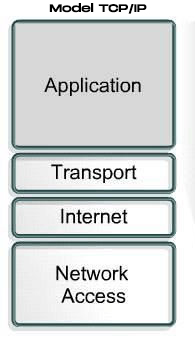
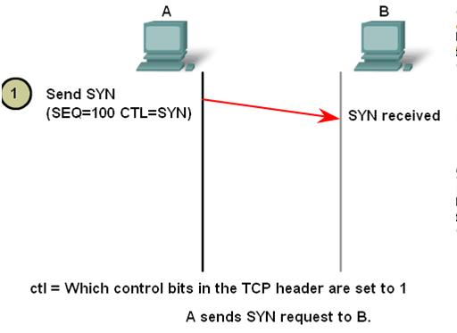
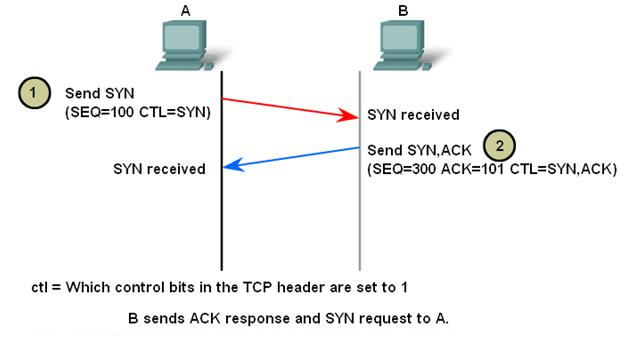
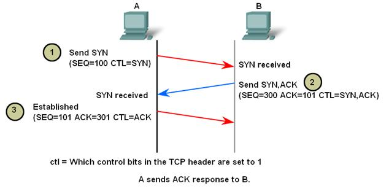
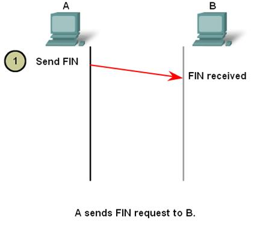
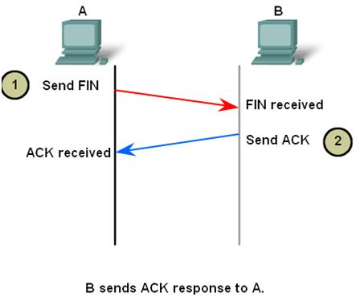
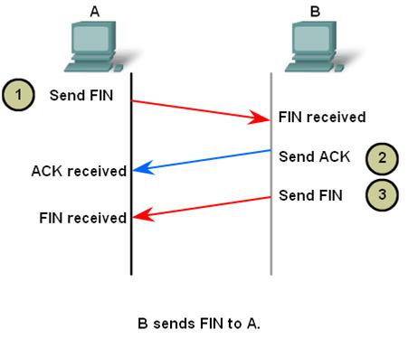
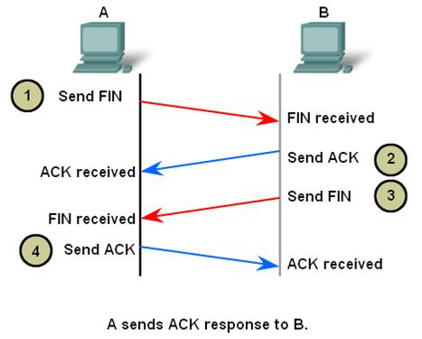
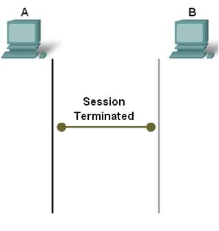

Model Referensi TCP/IP

Model referensi TCP/IP terdiri atas empat lapis
1. Application Layer
Layer di paling atas adalah Application Layer atau Layer Application. Layer ini termasuk ke dalam kategori upper layer atau layer yang berinteraksi dekat
dengan pengguna. Secara urutan, layer ini adalah layer yang berada di urutan paling atas, di atas Presentation Layer. Model TCP/IP tidak
memiliki session layer dan presentation layer. Layer ini memiliki macam-macam protokol tingkat tinggi, yaitu : TELNET, FTP,SMTP, DNS, HTTP, dan WWW.
2. Transport Layer
Layer di bawah Application Layer adalah Transport Layer. berfungsi menghubungkan antara aplication layer dan internet layer, contohnya : UDP, TCP, SNMP (apliccation) menggunakan UDP, Telnet, FTP, SMTP (apliccation) menggunakan TCP
3. Internet Layer
Layer ini berfungsi untuk memberikan layanan dasar pengantaran data. salah satu protokol yang bekerja pada layer ini adlah IP (internet protokol)
4. Network Interface
Layer terbawah dari model TCP/IP adalah Network Interface Layer, tanggung jawab utama
dari layer ini adalah menentukan bagaimana sebuah komputer dapat terkoneksi ke dalam
suatu jaringan komputer, hal ini sangat penting karena data harus dikirimkan dari dan ke
suatu host melalui sambungan pada suatu jaringan.
Mengapa Model Referensi dibuat berlayer?
- Membantu dalam desain protokol, karena protokol yang beroperasi
pada lapisan tertentu telah mendefinisikan informasi dan bertindak
untuk tugas tertentu dan menjadi penghubung untuk lapisan atas dan
bawahnya.
- Percepatan kompetisi antar vendor
- Mencegah pengaruh terhadap layer lainnya akibat adanya efek yang
terjadi akibat perubahan teknologi dan kemampuan pada suatu layer
- Menyediakan bahasa yang sama dalam mendeskripsikan fungsi dan
kemampuan jaringan
- Mudah memahami cara jaringan komputer bekerja
- Memecah masalah komunikasi data yang rumit menjadi beberapa bagian yang sederhana
Fungsi Transport Layer
- Menerima Data : Lapisan ini bekerja sama dengan lapisan di atasnya yaitu Session Layer dalam hal pengumpulan data node sebuah jaringan dan informasi lainnya. Setelah data sudah diterima maka layer akan mengolah data dan menggunakannya pada lapisan berikut.
- Memecah Data : Memecah data yang sudah dikumpulakn oleh Session Layer. Data dipecah karena ketika ukurannya sangat besar maka akan merepotkan pemrosesan berikutnya.
- Mengirim Segment : Mengirim pecahan data pada host yang lain
- Mengawasi data : Mengawasi gerak gerik data pda OSI Layer, transport layer akan memastikan bahwa data dapat terkirim dengan baik. Apabila pengiriman berhasil maka layer ini akan mengirimkan laporan tentang apa yang sudah terjadi pada data tersebut dengan menggunakan pesan
Penjelasan Transmission Control Protocol (TCP)
Pengertian
Transmission Control Protocol (TCP) adalah suatu set aturan standar komunikasi data yang digunakan dalam proses transfer data dari satu komputer ke komputer lain di jaringan komputer tanpa melihat perbedaan jenis hardware.
Kelebihan
- Sangat cocok digunakan untuk mengoneksikan berbagai macam jaringan, karena tidak terikat pada jenis perangkat keras khusus
- Mendukung mekanisme flow control
- Dapat memecah data menjadi lebih kecil dan menyusunnya kembali
- Memiliki tingkat konsistensi yang tinggi, sehingga banyak penggunanya
Kekurangan
- Jika mengirimkan data yang kecil akan kerepotan karena harus handshaking dulu, sehingga lebih lambat daripada UDP
- Tidak bisa broadcast karena TCP bersifat one to one
Prinsip Kerja
Pada saat melakukan tugasnya, protokol TCP memiliki beberapa prinsip kerja. Prinsip kerja sebuah protokol ini akan menjadi referensi bagi pembuat program atau admin jaringan untuk memilih protokol apa yang nanti akan digunakan untuk bisa melakukan trasnmisi data.
- Connection Oriented
Sebelum data dapat ditransmisikan antara dua host, dua proses yang berjalan pada lapisan aplikasi harus melakukan negosiasi untuk membuat sesi koneksi terlebih dahulu. Proses pembuatan koneksi TCP disebut juga dengan "Three-way Handshake". Tujuan metode ini adalah agar dapat melakukan sinkronisasi terhadap nomor urut dan nomor acknowledgement yang dikirimkan oleh kedua pihak dan saling bertukar ukuran TCP Window.
Setelah melewati handshake tadi, baru kemudian koneksi terbentuk (established). Bisa dikatakan device yang menggunakan protokol TCP ini akan melakukan kesepakatan terlebih dahulu sebelum transmisi data terjadi. TCP menggunakan proses jabat tangan yang sama untuk mengakhiri koneksi yang dibuat. Hal ini menjamin dua host yang sedang terkoneksi tersebut telah menyelesaikan proses transmisi data dan semua data yang ditransmisikan telah diterima dengan baik. Koneksi TCP ditutup dengan menggunakan proses terminasi koneksi FIN (TCP connection termination).
- Reliable Transmission
Data yang dikirimkan ke sebuah koneksi TCP akan diurutkan dengan sebuah nomor urut yang unik disetiap byte data dengan tujuan agar data dapat disusun kembali setelah diterima. Pada saat transmisi, bisa jadi data dipecah/difragmentasi, hilang, atau tiba di device tujuan tidak lagi urut. Pada saat data diterima, paket data yang duplikat akan diabaikan dan paket yang datang tidak sesuai dengan urutannya akan diurutkan agar dapat disusun kembali.
- Error Detection
Jika terjadi error, misalnya ada paket data yang hilang pada saat proses transmisi, bisa dilakukan pengiriman ulang data yang hilang. Untuk menjamin integritas setiap segmen TCP, TCP mengimplementasikan penghitungan TCP Checksum.
- Flow Control
Mendeteksi supaya satu host tidak mengirimkan data ke host lainnya terlalu cepat. Flow Control akan menjadi sangat penting ketika bekerja di lingkungan dimana device satu dengan device yang lain memiliki kecepatan komunikasi jaringan yang beragam. Sebagai contoh, ketika PC mengirimkan data ke smartphone. kemampuan PC dengan smartphone tentu berbeda. Smartphone lebih lambat dalam memproses data yang diterima daripada PC, maka TCP akan mengatur aliran data agar smartphone tidak kewalahan.
- Segment Size Control
Mendeteksi besaran MSS (maximum segment size) yang bisa dikirimkan supaya tidak terjadi IP fragmentation. MSS adalah infomasi ukuran data terbesar yang dapat ditransmisikan oleh TCP dalam bentuk segment tunggal. Informasi MMS ini dalam format Bytes. Untuk performa terbaik, MSS bisa ditetapkan dengan ukuran yang cukup kecil untuk menghindari fragmentasi IP. Fragmentasi IP dapat menyebabkan hilangnya paket dan retransmisi yang berlebihan.
- Congestion Control
Prisip kerja TCP terkhir yang cukup penting adalah Congestion Control. TCP menggunakan beberapa mekanisme untuk mencegah terjadinya congestion pada network. mekanisme yang dilakukan salah satunya adalah mengatur aliran data yang masuk ke dalam network.
Struktur segmen TCP

Proses Flow Control pada TCP
TCP akan menyimpan data yang dibutuhkan untuk dikirim dalam buffer pengiriman, dan data yang diterimanya di buffer penerima. Jika data siap dikirim, aplikasi akan membaca data dari buffer penerima.
Dalam hal ini, FLow contorl bertugas memastikan pengirim tidak mengirim lebih banyak paket ketika buffer penerima sudah penuh, karena penerima tidak akan dapat menanganinya dan harus melepaskan data tersebut.
Untuk mengontrol jumlah data yang dapat dikirim TCP, penerima akan mengiklankan Receive Window (rwnd), yaitu ruang cadangan di buffer penerima.
Setiap kali TCP menerima sebuah paket, penerima perlu mengirim pesan ack ke pengirim, mengakui bahwa penerima telah menerima paket itu dengan benar, dan dengan pesan ack ini penerima mengirimkan nilai dari Receive Window, sehingga pengirim tahu apakah ia dapat terus mengirim data atau tidak.
TCP menggunakan protokol Sliding Window untuk mengontrol jumlah byte dalam pengiriman. Dengan kata lain, jumlah byte telah dikirim tetapi belum diterima.
Misalkan pengirim ingin mengirim file sebesar 150000 byte dari node A ke node B. TCP dapat memecah file ini menjadi 100 paketyang dimana masing-masing berukuran 1500 byte. Ketika koneksi antara node A dan B dibuat, node B memberitahu Receive Window dierima 45000 byte.
TCP mengetahui bahwa node A dapat mengirim 30 paket pertama (1500 * 30 = 45000) sebelum menerima acknowledge. Jika mendapat pesan ack untuk 10 paket pertama dan Receive Window yang ada di pesan ack ini masih 45000, node A dapat mengirim 10 paket berikutnya.
jika aplikasi lambat membaca paket di node B, TCP akan tetap menerima paket yang diterima dengan benar, tetapi karena paket ini perlu disimpan di buffer penerima hingga aplikasi memutuskan untuk membacanya, sehingga Receive Window akan memperkecil paketnya.
Mekanisme Pembukaan dan Penutupan Komunikasi
Pembukaan
Untuk membuka sesi, dilakukan three way handshake. Tujuan dari handshake adalah sebagai berikut:
- Memastikan bahwa host penerima ada pada jaringan.
- Memverivikasi bahwa host penerima memiliki service yang aktif dan menerima request pada port yang ingin dituju oleh pengirim.
- Menginformasikan host penerima bahwa pengirim ingin membuka sesi komunikasi pada nomor port tersebut.
Berikut adalah langkah kerja three way handshake:
- Client mengirimkan segment yang berisi nomor sequence, yang berfungsi sebagai permohonan pembukaan sesi, ini adalah segment SYN.

- Server merespon dengan segment SYN,ACK yang berisi nilai ACK (nomor sequence client diterima +1), dan nomor sequencenya sendiri. SYN,ACK ini memungkinkan client untuk menghubungkan response dengan segment yang ia kirim.

- Client akan merespon dengan ACK yang nilai sequencenya +1 dari sequence sebelumnya, dan nilai ACK = nilai sequence server +1.

Penutupan
Untuk menutup koneksi, control flag FIN (Finish) harus diset. Diperlukan two way handshake untuk menutup satu sesi searah, terdiri dari FIN dan ACK. Sehingga dibutuhkan 4 kali pergantian segment untuk menutup sebuah komunikasi TCP.
- Saat client tidak memiliki data untuk dikirim lagi, ia mengirim segment dengan flag FIN bernilai 1

- Server akan mengirim ACK sebagai tanda terima untuk penutupan sesi.

- Server mengirim FIN pada client.

- Client merespon dengan ACK.

Dengan 4 langkah tersebut, sesi dianggap selesai, jika ada pengiriman data lagi, sesi harus dibuka ulang.

Cara TCP Mengatasi Kongesti atau Kemacetan
Kongesti di internet terjadi karena jumlah pengiriman data melebihi kapasitas router yang ada. Namun demikian,
kenyataannya tidak setiap kongesti yang terjadi disebabkan karena hal tersebut. Sebagai contoh ketika kecepatan data
dari satu pengirim jauh lebih tinggi dari pengirim yang lain karena mekanisme umpan balik yang tidak tepat, maka
pengirim dengan kecepatan data jauh lebih rendah dapat dikatakan mengalami kongesti.
Cara mengatasinya adalah dengan Congestion control. Congestion control adalah metode yang digunakan untuk memantau proses mengatur jumlah data memasuki jaringan sehingga menjaga tingkat lalu lintas pada nilai yang dapat diterima.
Skema congestion control TCP dapat dibagi menjadi lima fase sebagai berikut:
- Slow-Start : Saat koneksi dimulai atau terjadi timeout, mulai slowstart state. Harga initial dari cwnd diatur pada harga satu
paket saat memulai state tersebut. Pengirim menambah nilai cwnd secara exponensial dengan menambah sebuah paket setiap menerima ack. Slow-start mengontrol
ukuran window sampai cwnd mencapai harga threshold slow-strat threshold (ssthresh). Saat cwnd mencapai ssthresh state congestion avoidance dimulai.
- Congestion Avoidance : Saat ukuran window di slow-start state bertambah secara
exponensial, paket dikirim dengan kecepatan bertambah
yang akan mempercepat terjadinya congestion pada
jaringan. Untuk menghindari hal ini, congestion
avoidance state mulai ketika cwnd melebihi ssthresh.
Pada state ini cwnd ditambah dengan 1/cwnd paket
setiap menerima ack supaya ukuran window naik secara
linier.
- Fast Retransmission : Dupikasi ACK disebabkan karena tidak diterimanya
paket oleh penerima. Pengirim mengganggap packet loss
atau tertunda. Jika terdapat tiga atau lebih duplikasi
ACK diterima maka packet loss. Pengirim segera
melakukan retransmisi tanpa menunggu coarse-grai.
- Fast Recovery : Saat fast retransmission dilakukan, ssthresh diset pada
harga setengah cwnd dan kemudian cwnd diset ke
ssthresh ditambah tiga paket. Cwnd ditambah dengan
sebuah paket setiap menerima duplikasi ACK. Saat ACK
dari paket re-transmisi diterima, cwnd diset ke ssthresh
dan jika pengirim mengalami congestion avoidance
kembali, maka cwnd direset pada pada setengah harga
cwnd setelah fast recovery.
- Timeout : Untuk setiap paket yang dikirim, pengirim
mempertahankan timer dimana digunakan untuk
mengecek time-out dari ACK yang tidak diterima dari
suatu paket. Jika mengalami time out pengirim mereset
cwnd ke satu dan melakukan slow-start. Harga
kegagalan dari clock digunakan untuk round trip sebesar
500 ms, misalnya pengirim melakukan pengecekan
untuk timeout setiap 500 ms.